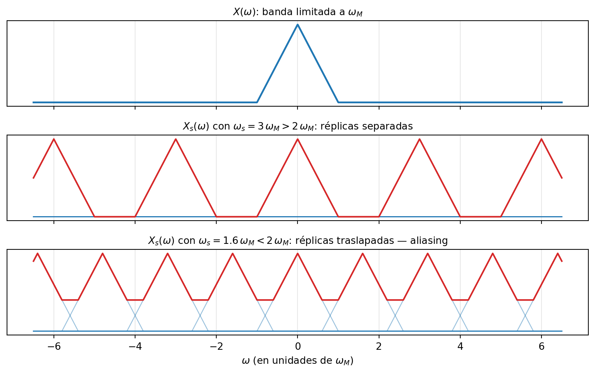
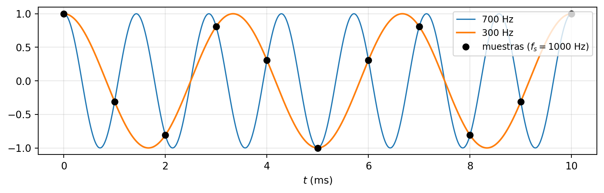
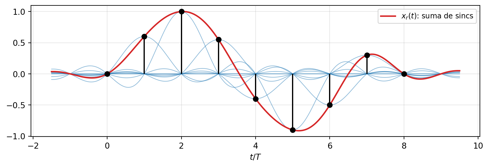
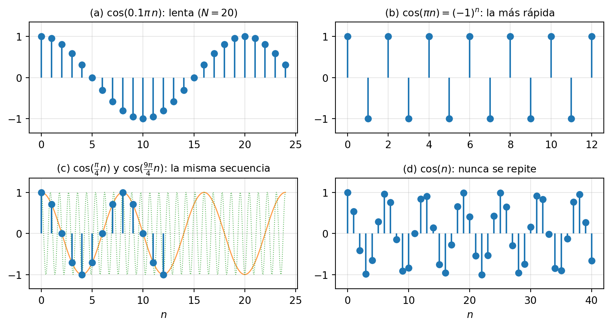
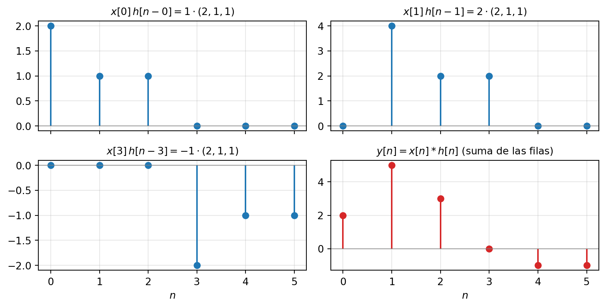
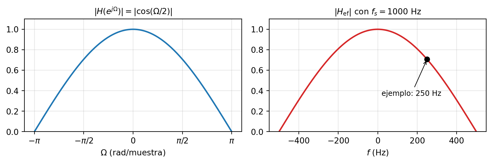

5 Muestreo y sistemas discretos
NotaObjetivos del capítulo [U5.1–U5.5]
Al terminar este capítulo podrás: derivar el espectro de una señal muestreada, decidir con el teorema del muestreo si hay aliasing y reconstruir la señal con la fórmula de interpolación [U5.1]; operar con sinusoides discretas: no-unicidad de \Omega, rango fundamental y condición de periodicidad [U5.2]; calcular convoluciones discretas lineales y cíclicas, y explicar la relación entre ambas [U5.3]; modelar sistemas discretos con ecuaciones de diferencias, obtener h[n] y decidir estabilidad [U5.4]; y analizar cadenas híbridas C/D → LTI → D/C calculando su respuesta efectiva continua [U5.5].
Prerrequisitos: la transformada de Fourier y sus propiedades (capítulo 3) — en particular la propiedad de multiplicación y la transformada del tren de impulsos — y el impulso discreto \delta[n] del capítulo 1 (Sección 1.5.6).
5.1 Una frase se cobra
En el capítulo 1, al presentar el tren de impulsos (Sección 1.5.5), te pedí anotar una frase: “muestrear una señal es multiplicarla por un tren de impulsos”. Y el capítulo 3 dejó una pregunta escrita en la pizarra: ¿cuándo podemos recuperar una señal continua desde sus muestras? Este capítulo existe para cobrar esa frase y responder esa pregunta — y de paso, para pagar otra deuda: la sinc, presentada en el capítulo 1 como “la protagonista silenciosa del muestreo”, hoy actúa.
El asunto no es académico: casi ninguna señal que procesas en tu vida es continua cuando llega al procesador. La voz en tu teléfono, la música en streaming, el electrocardiograma en la pantalla del monitor — todas nacieron continuas y viven como secuencias de números. La pregunta de ingeniería es brutal en su simpleza: al quedarnos solo con muestras, ¿qué se pierde? La respuesta — nada, si muestreas suficientemente rápido — es de las ideas más hermosas del curso, y tiene nombre propio: el teorema del muestreo.
La segunda mitad del capítulo vive dentro del mundo discreto: sus sinusoides (que guardan sorpresas), su convolución (que ya conoces, ahora sin integrales — y con una prima nueva: la cíclica), sus sistemas (ecuaciones de diferencias) y el plato fuerte de los exámenes: las cadenas que entran y salen del mundo continuo.
5.2 El teorema del muestreo
5.2.1 El modelo: multiplicar por el tren
Tomar muestras de x(t) cada T segundos (el período de muestreo; f_s = 1/T es la frecuencia de muestreo y \omega_s = 2\pi/T su versión angular) se modela multiplicando por el tren de impulsos \delta_T(t) = \sum_n \delta(t - nT):
x_s(t) = x(t)\,\delta_T(t) = \sum_{n=-\infty}^{\infty} x(nT)\,\delta(t - nT)
La segunda igualdad es la propiedad de multiplicación del impulso (capítulo 1): cada impulso queda “pesado” por el valor de la señal en su instante. ¿Por qué este modelo raro — impulsos en vez de una simple lista de números? Porque x_s(t) sigue viviendo en tiempo continuo, y entonces podemos aplicarle toda la maquinaria de Fourier del capítulo 3. Ese es el truco: la pregunta “¿se pierde información al muestrear?” se responde mirando el espectro.
5.2.2 Muestrear es periodizar
Tres propiedades conocidas, una conclusión enorme.
Paso 1 — multiplicar en el tiempo es convolucionar en frecuencia: x_s(t) = x(t)\,\delta_T(t) \;\Longrightarrow\; X_s(\omega) = \frac{1}{2\pi}\,X(\omega) * \mathcal{F}\{\delta_T\}(\omega)
Paso 2 — la transformada de un tren de impulsos es otro tren de impulsos (capítulo 3): \mathcal{F}\{\delta_T(t)\} = \frac{2\pi}{T}\sum_{k=-\infty}^{\infty} \delta(\omega - k\,\omega_s)
Paso 3 — convolucionar con un impulso desplaza: X(\omega) * \delta(\omega - \omega_0) = X(\omega - \omega_0). Juntando todo:
ImportanteEl espectro de la señal muestreada
X_s(\omega) = \frac{1}{T}\sum_{k=-\infty}^{\infty} X(\omega - k\,\omega_s) El espectro original, copiado infinitas veces: una réplica centrada en cada múltiplo de \omega_s, todas escaladas por 1/T. En una frase — anótala junto a la del capítulo 1, es su continuación exacta:
Muestrear en el tiempo es periodizar en la frecuencia.
Este es el dibujo del capítulo. Míralo con calma, porque contiene el teorema completo:
Dos escenarios, dos destinos:
- \omega_s grande: las réplicas quedan separadas — entre ellas hay aire. La réplica central es X(\omega) (salvo el factor 1/T): no se perdió nada, y un filtro pasa-bajos puede recortarla limpia.
- \omega_s chico: las réplicas se traslapan y se suman. La réplica central ya no es X(\omega): información destruida, sin vuelta atrás.
La frontera entre ambos mundos: las réplicas no se tocan si y solo si \omega_s - \omega_M > \omega_M. De ahí, directo:
ImportanteTeorema del muestreo (Nyquist–Shannon)
Si x(t) es de banda limitada — X(\omega) = 0 para \lvert\omega\rvert \ge \omega_M — y se muestrea con \omega_s > 2\,\omega_M \qquad \text{(equivalentemente } f_s > 2 f_M\text{)} entonces x(t) queda completamente determinada por sus muestras x(nT) y puede reconstruirse exactamente. A 2 f_M se le llama tasa de Nyquist.
Léelo con el asombro que merece: una señal continua — un objeto con infinitos valores — cabe entera en una secuencia numerable de números, siempre que oscile con moderación. Por eso un CD muestrea a 44 100 Hz: el oído llega hasta unos 20 kHz, y 44\,100 > 2 \times 20\,000 con un margen de cortesía.
5.2.3 Aliasing: frecuencias disfrazadas
¿Y si se viola la condición? Una componente con f > f_s/2 hace que la réplica vecina invada la banda base: esa componente aparece disfrazada de una frecuencia más baja. El fenómeno se llama aliasing (de alias: otro nombre para la misma cosa). Para sinusoides hay una regla práctica que conviene tatuarse: la frecuencia aparente es \lvert f - k f_s\rvert, con el entero k que la deje en [0, f_s/2].

TipEjemplo resuelto (calibre I3)
Sea x(t) = \cos(600\pi t) + \cos(1400\pi t).
(a) ¿Cuál es la frecuencia de muestreo mínima para reconstruir x(t) exactamente? (b) La señal se muestrea a f_s = 1000 Hz y se reconstruye con un filtro ideal de corte f_s/2. ¿Qué señal sale?
Solución.
(a) Las componentes están en f_1 = 300 Hz y f_2 = 700 Hz, así que f_M = 700 Hz y la tasa de Nyquist es 2 f_M = 1400 Hz: cualquier f_s > 1400 Hz sirve.
(b) Con f_s = 1000 Hz, la componente de 300 Hz cumple 300 < 500 = f_s/2: pasa intacta. La de 700 Hz no: su frecuencia aparente es \lvert 700 - 1000\rvert = 300 Hz. En el espectro: las réplicas de \pm 700 desplazadas en \mp 1000 caen en \mp 300, dentro de la banda base. El filtro entrega x_r(t) = \cos(600\pi t) + \cos(600\pi t) = 2\cos(600\pi t) Las dos componentes colapsaron en una sola — la de 700 Hz se disfrazó de 300 Hz y se sumó a la que ya estaba ahí. Nota el detalle de calibre: la respuesta no es “sale un tono de 300 Hz”, es la expresión analítica completa, con la amplitud duplicada.
El aliasing se escucha. En la demo del curso (C19) se genera un barrido que sube de 200 Hz hasta casi 4000 Hz, calculado a f_s = 4000 Hz: al cruzar f_s/2 = 2000 Hz el tono, en lugar de seguir subiendo, rebota y baja — las frecuencias se pliegan según la regla f_s - f. Es el mismo fenómeno por el que las ruedas de las carretas giran al revés en el cine: la cámara muestrea a 24 cuadros por segundo, y una rueda que gira rápido se disfraza de una que gira lento — o al revés.
5.2.4 Reconstrucción: la sinc entra en escena
Si se cumplió Nyquist, recuperar X(\omega) es quedarse con la réplica central: un filtro pasa-bajos ideal de ganancia T (para deshacer el 1/T) y corte \omega_s/2: H_r(\omega) = T\,\operatorname{rect}\!\Big(\frac{\omega}{\omega_s}\Big) \qquad\Longrightarrow\qquad h_r(t) = \operatorname{sinc}\!\Big(\frac{t}{T}\Big)
Reconstruir es filtrar: x_r(t) = x_s(t) * h_r(t). Y como x_s es una suma de impulsos pesados, la convolución sale sola — cada impulso deposita una sinc:
ImportanteLa fórmula de interpolación
x_r(t) = \sum_{n=-\infty}^{\infty} x(nT)\,\operatorname{sinc}\!\Big(\frac{t - nT}{T}\Big) Cada muestra iza su sinc; la suma de todas reconstruye la señal — no una aproximación: la señal.

Aquí se paga la promesa del capítulo 1: la sinc, que entró al zoológico como una función curiosa con ceros en los enteros, es la función que interpola. Y esos ceros son exactamente su gracia — verifícalo (es una línea): en t = mT, \operatorname{sinc}\big(\frac{mT - nT}{T}\big) = \operatorname{sinc}(m-n), que vale 1 si n = m y 0 si no. Cada sinc pasa por su muestra y por los ceros de todas las demás: en los instantes de muestreo no hay nada que discutir, y entre medio la suma entrega la única señal de banda limitada compatible.
Honestidad breve (30 segundos y seguimos): el filtro ideal es irrealizable — la sinc se extiende infinitamente hacia ambos lados, y para reconstruir en t necesitarías muestras del futuro. Los conversores reales usan un retenedor de orden cero (mantener la última muestra constante, [DB E0150]) más un filtro suavizador; y como el mundo físico no es de banda limitada, antes de muestrear se aplica un filtro anti-aliasing analógico bajo f_s/2 — mejor cortar a sabiendas que dejar que los agudos se disfracen de graves. La cuantización (redondear cada muestra a 2^B niveles) queda en este curso a nivel conceptual: pierde información, pero de forma controlada y tan pequeña como se quiera pagando bits.
5.3 Sinusoides discretas
Ya sabemos entrar al mundo discreto. Ahora vivamos adentro. El átomo de este mundo es el de siempre — la exponencial compleja — pero con índice entero:
x[n] = A\,e^{j(\Omega n + \phi)}, \qquad\qquad x[n] = A\cos(\Omega n + \phi)
donde \Omega es la frecuencia angular discreta, en radianes por muestra. La interpretación geométrica buena: e^{j\Omega n} es un fasor que salta por el círculo unitario — cada muestra avanza exactamente \Omega radianes respecto de la anterior. En el continuo el fasor giraba; aquí salta.
El puente con el muestreo: si la secuencia viene de muestrear \cos(\omega t) cada T segundos, entonces x[n] = \cos(\omega T n), es decir \Omega = \omega\,T = \frac{2\pi f}{f_s} La frecuencia discreta es la frecuencia continua medida con la regla del muestreador. Esta igualdad chica es la llave de las cadenas híbridas de la Sección 5.6 — y de los exámenes.
AdvertenciaConvención de notación del curso
Frecuencia continua: \omega en rad/s. Frecuencia discreta: \Omega en rad/muestra. [Oppenheim] usa \omega para ambas y distingue por contexto — nosotros no: cuando ambas convivan en una misma ecuación (y van a convivir), la mayúscula te salvará. Así aparece en todo el material y las evaluaciones del curso.
5.3.1 La no-unicidad: \Omega y \Omega + 2\pi son la misma señal
Aquí está la diferencia con el mundo continuo. En continuo, cada \omega define una sinusoide distinta. En discreto:
e^{j(\Omega + 2\pi)n} = e^{j\Omega n}\,\underbrace{e^{j2\pi n}}_{=\,1\;\;\forall n \in \mathbb{Z}} = e^{j\Omega n}
Una línea — pero léela bien: no dice que las señales “se parecen”. Dice que \Omega y \Omega + 2\pi k producen exactamente la misma secuencia, muestra por muestra. No son dos señales parecidas: son la misma señal con dos nombres — se dicen alias una de la otra. Consecuencias inmediatas:
- Basta un intervalo de largo 2\pi para nombrar todas las sinusoides discretas. Convención del curso: \Omega \in [-\pi, \pi), el rango fundamental.
- \cos\big(\tfrac{9\pi}{4}n\big) = \cos\big(\tfrac{\pi}{4}n\big) — verifícalo en n = 0, 1, 2 si dudas.
- Las frecuencias altas viven cerca de \pi, no en infinito. Recorre la escala: \Omega = 0 es la constante; \Omega pequeño oscila lento; \Omega = \pi es la oscilación más rápida posible — \cos(\pi n) = (-1)^n, la secuencia alternante. Y pasado \pi, la secuencia se ve más lenta (porque \pi + \epsilon es alias de -(\pi - \epsilon)). En el mundo discreto, “agudo” significa “cerca de \pi”.
Y ahora cierra el círculo con la sección anterior: esta no-unicidad es el aliasing visto desde adentro. Dos frecuencias continuas f y f - f_s caen, vía \Omega = 2\pi f/f_s, en frecuencias discretas que difieren en 2\pi: por eso sus muestras son indistinguibles. La frontera f = f_s/2 es exactamente \Omega = \pi. El teorema del muestreo y esta identidad de una línea son la misma verdad, contada desde los dos lados de la puerta.
5.3.2 Periodicidad: la condición racional
Segunda sorpresa (el capítulo 1 la dejó anunciada al final de Sección 1.2.2): una sinusoide discreta puede no ser periódica. En continuo, \cos(\omega t) siempre se repite. En discreto, el período debe ser un entero de muestras — y eso no siempre se puede.
La demostración es corta y es materia: x[n] = \cos(\Omega n + \phi) es periódica con período N \in \mathbb{Z}^+ si x[n+N] = x[n] para todo n, o sea si los argumentos difieren en un múltiplo entero de 2\pi: \Omega(n+N) + \phi = \Omega n + \phi + 2\pi m \;\Longleftrightarrow\; \Omega N = 2\pi m, \quad m \in \mathbb{Z}
ImportanteCondición de periodicidad discreta
x[n] = \cos(\Omega n + \phi) \text{ es periódica} \iff \frac{\Omega}{2\pi} = \frac{m}{N} \in \mathbb{Q} Con la fracción irreducible, N es el período fundamental, y m cuenta cuántas vueltas completas da el fasor en esas N muestras. (La cantidad \Omega/2\pi = m/N es la frecuencia en ciclos/muestra — la “f_0 discreta”.)
TipEjemplos resueltos (calibre I3)
(a) \cos\big(\tfrac{3\pi}{4}n\big): \frac{\Omega}{2\pi} = \frac{3}{8}, irreducible → periódica con N = 8 (el fasor da 3 vueltas cada 8 muestras).
(b) \cos\big(\tfrac{3\pi}{2}n\big): \frac{\Omega}{2\pi} = \frac{3}{4} → N = 4. Ojo con el error clásico: la receta continua 2\pi/\Omega da 4/3, un número no entero que aquí no significa nada. En discreto, primero la fracción, después el período.
(c) \cos(n) (o sea \Omega = 1 rad/muestra): \frac{\Omega}{2\pi} = \frac{1}{2\pi}, irracional → no es periódica. El fasor salta 1 radián por muestra y nunca vuelve a pisar exactamente el punto de partida: pasa infinitas veces cerca de repetirse, jamás lo hace. (Al oído, sin embargo, suena como un tono perfectamente normal — la periodicidad exacta de la secuencia y la percepción de altura son cosas distintas; esa tensión la resolverá la DFT en el capítulo 7.)
(d) \cos\big(\tfrac{\pi}{3}n\big) + \sin\big(\tfrac{\pi}{4}n\big): períodos individuales N_1 = 6 y N_2 = 8; la suma se repite en el mínimo común múltiplo: N = 24.

La tabla que ordena todo — compárala fila a fila con tus reflejos del mundo continuo:
| continua \cos(\omega t) | discreta \cos(\Omega n) | |
|---|---|---|
| variable | t \in \mathbb{R} | n \in \mathbb{Z} |
| frecuencias distintas | señales distintas | \Omega y \Omega + 2\pi k: la misma señal |
| rango de frecuencias | (-\infty, \infty) | basta [-\pi, \pi) |
| oscilación más rápida | no existe (\omega \to \infty) | \Omega = \pi: la alternante (-1)^n |
| ¿periódica? | siempre, T_0 = 2\pi/\omega | solo si \Omega/2\pi es racional |
5.4 Convolución discreta: lineal y cíclica
5.4.1 La deducción exprés
En el capítulo 2, deducir la convolución costó una construcción entera: aproximar la señal con pulsos, tomar el límite. En discreto, el primer paso es una identidad evidente — una secuencia es una lista de valores, cada uno parado en su índice:
x[n] = \sum_{k=-\infty}^{\infty} x[k]\,\delta[n-k]
(con \delta[n] el impulso discreto del capítulo 1: un uno humilde, sin distribuciones ni límites). La cadena LTI de siempre, ahora sin integrales: si h[n] es la respuesta al impulso, la invariancia da \delta[n-k] \mapsto h[n-k] y la linealidad remata:
ImportanteLa suma de convolución
y[n] = \sum_{k=-\infty}^{\infty} x[k]\,h[n-k] = x[n] * h[n] La salida en n es la superposición de los ecos de todas las entradas, cada eco pesado por h evaluada en “cuánto tiempo ha pasado”. Lo que en el continuo fue una clase entera con andamiaje, aquí son diez minutos: ese es el premio por haber sufrido primero la versión continua.
Las propiedades viajan gratis (mismas demostraciones, con sumas): conmutativa (x * h = h * x — en la práctica, da vuelta siempre la secuencia más corta), asociativa y distributiva (cascadas se funden en un solo h, paralelos se suman), e identidad: x[n] * \delta[n] = x[n], x[n] * \delta[n - n_0] = x[n - n_0].
5.4.2 Cálculo: tabla, soporte y suma geométrica
Antes de calcular cualquier convolución, anticipa el resultado: si x tiene L_1 muestras no nulas y h tiene L_2, entonces x * h tiene a lo más L_1 + L_2 - 1; y los soportes se suman — el inicio del resultado es la suma de los inicios, el fin es la suma de los fines. Verificar el largo antes de calcular es el hábito que salva puntos en la I3.
El método tabular — el caballo de batalla para secuencias cortas. Ejemplo: x[n] = (1, 2, 0, -1) y h[n] = (2, 1, 1), ambas partiendo en n = 0. Cada fila es x[k]\,h[n-k]: una copia de h desplazada k posiciones y escalada por x[k]; la salida es la suma por columnas:
| n | 0 | 1 | 2 | 3 | 4 | 5 |
|---|---|---|---|---|---|---|
| x[0]\,h[n] = 1\cdot(2,1,1) | 2 | 1 | 1 | |||
| x[1]\,h[n-1] = 2\cdot(2,1,1) | 4 | 2 | 2 | |||
| x[2]\,h[n-2] = 0\cdot(2,1,1) | 0 | 0 | 0 | |||
| x[3]\,h[n-3] = -1\cdot(2,1,1) | -2 | -1 | -1 | |||
| y[n] (suma) | 2 | 5 | 3 | 0 | -1 | -1 |
Seis muestras, como predice 4 + 3 - 1. La lectura física de las filas es la deducción hecha tabla: cada muestra de la entrada dispara una copia de h, retardada y escalada; la salida es la superposición.

Para secuencias infinitas la tabla no alcanza y se trabaja la suma directamente. El ejemplo canónico (calibre I3): x[n] = a^n u[n] con \lvert a\rvert < 1, h[n] = u[n] (el acumulador): y[n] = \sum_{k=-\infty}^{\infty} a^k u[k]\,u[n-k] = \sum_{k=0}^{n} a^k = \frac{1 - a^{n+1}}{1 - a}, \quad n \ge 0 (y 0 para n < 0). La clave está en los límites: u[k] obliga k \ge 0 y u[n-k] obliga k \le n. La herramienta es la suma geométrica — en el mundo discreto juega el papel que las integrales de exponenciales jugaban en el continuo; convérsala en reflejo. Nota al margen: y[n] \to \frac{1}{1-a}, la respuesta estacionaria al escalón — reaparecerá con la transformada Z.
(NumPy verifica en una línea: np.convolve([1,2,0,-1],[2,1,1]). Las máquinas convolucionan mejor que tú; lo que se evalúa es que sepas qué estás calculando y puedas hacerlo a mano en secuencias cortas.)
5.4.3 La convolución cíclica
Existe una segunda convolución en el mundo discreto, y no la presento por completitud enciclopédica: en el capítulo 7 verás que el algoritmo más importante del procesamiento de señales — la FFT — multiplica espectros (DFT), y multiplicar DFTs no entrega la convolución lineal: entrega esta. Quien confunde las dos produce audio con clics y filtros que fallan. Hoy la definimos y la contrastamos; el capítulo 7 cobrará esta semilla.
ImportanteDefinición: convolución cíclica
Para dos secuencias de largo N (índices 0, \dots, N-1): y_c[n] = x[n] \circledast h[n] = \sum_{k=0}^{N-1} x[k]\,h[(n-k) \bmod N\,], \qquad n = 0, \dots, N-1 La única diferencia con la lineal: el índice n - k se toma módulo N — lo que se sale por la derecha reaparece por la izquierda.
Imagen para el bolsillo: la lineal desliza h sobre una recta; la cíclica la hace girar sobre un reloj de N horas. Y el resultado tiene largo N, no 2N - 1: no hay dónde crecer.
Contraste completo en largo 4 — mismo par para ambas: x[n] = (1, 2, 3, 4), h[n] = (1, 1, 0, 0).
Lineal (h suma la muestra actual y la anterior): y_\ell[n] = (1, 3, 5, 7, 4), largo 4 + 2 - 1 = 5.
Cíclica (N = 4), calculando n = 0 con el reloj a la vista: y_c[0] = x[0]h[0] + x[1]h[3] + x[2]h[2] + x[3]h[1] = 1 + 0 + 0 + 4 = 5 y_c[n] = (5, 3, 5, 7)
¿De dónde salió ese 5? La quinta muestra de la lineal, y_\ell[4] = 4, no tiene dónde vivir en un resultado de largo 4: se enrolla y cae sumándose en la posición 4 \bmod 4 = 0. Esa es la relación general — el resultado que ordena todo:
y_c[n] = \sum_{m} y_\ell[n + mN]
la cíclica es la lineal enrollada sobre el reloj. ¿Te suena “sumar réplicas desplazadas”? Es el mismo fenómeno del aliasing de la Sección 5.2.2, pero en el tiempo: solapar réplicas por vivir en un mundo periódico. Muestrear periodiza la frecuencia; la cíclica periodiza el tiempo. La simetría no es casualidad — es la dualidad de Fourier trabajando, y en el capítulo 7 quedará limpia. Adelanto práctico en una frase: si quieres la lineal usando maquinaria cíclica, alarga ambas secuencias con ceros hasta N \ge L_1 + L_2 - 1 (zero-padding) — no queda nada que enrollar.
5.5 Ecuaciones de diferencias
En el mundo continuo, los sistemas físicos se modelaron con ecuaciones diferenciales. En el discreto, el rol lo toman las ecuaciones de diferencias: relaciones entre muestras presentes y pasadas. Y traen una ventaja enorme: no hace falta resolver nada para usarlas — se iteran, muestra a muestra. Así calcula un computador; así funciona todo filtro digital.
Ejemplo 1 — el promedio móvil (el sistema discreto más usado del planeta): y[n] = \tfrac{1}{2}x[n] + \tfrac{1}{2}x[n-1] Su respuesta al impulso se lee directo — con x = \delta solo sobreviven dos términos: h[n] = \tfrac{1}{2}\delta[n] + \tfrac{1}{2}\delta[n-1] = \big(\tfrac{1}{2}, \tfrac{1}{2}\big) Finitas muestras no nulas: sistema FIR (finite impulse response). La intuición: suaviza — el ruido rápido se cancela al promediar, lo lento pasa. En la Sección 5.6 esa intuición se volverá cuantitativa.
Ejemplo 2 — primer orden con realimentación: y[n] = a\,y[n-1] + x[n] Aquí la salida se muerde la cola y h[n] no se lee: se itera. Con x[n] = \delta[n] y reposo inicial: h[0] = a \cdot 0 + 1 = 1, \qquad h[1] = a \cdot 1 + 0 = a, \qquad h[2] = a^2, \;\dots \qquad\Longrightarrow\qquad h[n] = a^n\,u[n] Infinitas muestras no nulas: sistema IIR (infinite impulse response) — un solo coeficiente de realimentación fabrica una cola exponencial eterna. Es el análogo discreto exacto del circuito RC del capítulo 2: memoria que se desvanece geométricamente. (¿Te suena a^n u[n]? Es la secuencia del ejemplo analítico de la sección anterior — el mundo discreto tiene pocos personajes y los recicla.)
Estabilidad. Mismo criterio que en continuo, con suma en vez de integral: un LTI discreto es BIBO estable si y solo si \sum_{n=-\infty}^{\infty} \lvert h[n]\rvert < \infty Los veredictos de nuestros personajes: el promedio móvil suma 1 < \infty — estable, y todo FIR lo es (una suma finita no diverge). El primer orden suma la geométrica \sum \lvert a\rvert^n, que converge \iff \lvert a\rvert < 1: la realimentación es estable solo si atenúa. Y el acumulador y[n] = y[n-1] + x[n] (el caso a = 1, la “integral” discreta) es inestable: h[n] = u[n], suma infinita — el testigo concreto es la entrada acotada x[n] = u[n], que produce y[n] = n + 1 \to \infty. Guarda el resultado del primer orden: en el capítulo 6 se convertirá en “el polo dentro del círculo unitario” — la misma verdad, en otro mapa.
Estados, en un párrafo (mención conceptual; no se evalúa): una ecuación de diferencias de orden N puede reescribirse como N ecuaciones de primer orden acopladas — un vector de estado (las muestras que el sistema “recuerda”) que se actualiza con una multiplicación matricial por paso: \mathbf{v}[n+1] = A\,\mathbf{v}[n] + B\,x[n]. Es el formato con que los computadores simulan sistemas y la puerta de entrada al curso de control; los curiosos pueden mirar [DB E0159].
5.6 Cadenas híbridas: C/D → LTI → D/C
La motivación es el mundo real entero: casi todo el procesamiento de señales de hoy — audio, comunicaciones, control, biomédica — sigue esta arquitectura: la señal continua se muestrea (conversor C/D), un procesador le aplica un sistema discreto, y un conversor D/C la devuelve al mundo continuo:
x_c(t) \longrightarrow \boxed{\text{C/D}} \xrightarrow{\;x[n]\;} \boxed{\;h[n]\;} \xrightarrow{\;y[n]\;} \boxed{\text{D/C}} \longrightarrow y_c(t)
La pregunta de ingeniería: vista desde afuera (de x_c a y_c), ¿qué filtro continuo es esta caja compuesta? El examen de este curso pregunta esto todos los años — armemos la maquinaria completa.
Pieza 1 — la respuesta en frecuencia discreta. Igual que en el continuo con e^{j\omega t}, las exponenciales e^{j\Omega n} son autofunciones de los LTI discretos: x[n] = e^{j\Omega n} \;\Longrightarrow\; y[n] = \sum_k h[k]\,e^{j\Omega(n-k)} = e^{j\Omega n}\,\underbrace{\sum_k h[k]\,e^{-j\Omega k}}_{H(e^{j\Omega})} H(e^{j\Omega}) es la respuesta en frecuencia del sistema discreto. La notación parece barroca; en el capítulo 7 (DTFT) se justificará sola — hoy es solo el autovalor. Y nota: es automáticamente periódica en \Omega con período 2\pi; la no-unicidad de la Sección 5.3.1 obliga.
Pieza 2 — el puente de frecuencias. Si no hay aliasing, una sinusoide continua de frecuencia \omega viaja por la cadena como sinusoide discreta de frecuencia \Omega = \omega T, se multiplica por H(e^{j\omega T}), y el D/C ideal la devuelve a su frecuencia original. Conclusión:
ImportanteLa respuesta efectiva de la cadena
H_{\text{ef}}(\omega) = H(e^{j\Omega})\Big|_{\Omega = \omega T} \qquad \text{para } \lvert\omega\rvert < \frac{\pi}{T} La cadena completa es un filtro continuo: la curva del filtro discreto con el eje reescalado por T. Válido solo en la banda de no-aliasing — fuera de ella el teorema del muestreo manda y no hay equivalente LTI.
TipEjemplo resuelto (calibre examen)
Cadena con conversores ideales, T = 10^{-3} s (f_s = 1000 Hz), y el promedio móvil y[n] = \tfrac{1}{2}x[n] + \tfrac{1}{2}x[n-1]. (a) H(e^{j\Omega}) y su magnitud. (b) H_{\text{ef}}(\omega). (c) Salida para x_c(t) = 4\cos(500\pi t).
Solución.
(a) Con h[n] = (\tfrac12, \tfrac12): H(e^{j\Omega}) = \tfrac{1}{2}\big(1 + e^{-j\Omega}\big) = e^{-j\Omega/2}\;\frac{e^{j\Omega/2} + e^{-j\Omega/2}}{2} = e^{-j\Omega/2}\cos\!\big(\tfrac{\Omega}{2}\big) (factorizar la media fase es el mismo truco de las series de Fourier — reconócelo). Magnitud \lvert\cos(\Omega/2)\rvert: vale 1 en \Omega = 0 y 0 en \Omega = \pi — un pasa-bajos, como anticipaba la intuición de “promediar suaviza”. Y el cero en \Omega = \pi tiene una explicación de una línea: ahí la entrada alterna signo muestra a muestra, y el promedio de dos muestras consecutivas se anula.
(b) Sustituir \Omega = \omega T: H_{\text{ef}}(\omega) = e^{-j\omega T/2}\cos\!\big(\tfrac{\omega T}{2}\big), \qquad \lvert\omega\rvert < \pi/T = 1000\pi Lectura fina: un pasa-bajos continuo con retardo de T/2 — el promedio de dos muestras “vive” entre ambas, medio período tarde; la fase lineal delata el retardo.
(c) \omega_0 = 500\pi rad/s, o sea f_0 = 250 Hz. Chequeo de Nyquist primero (hábito obligatorio): 250 < 500 = f_s/2 ✓ — la fórmula aplica. Con \Omega_0 = \omega_0 T = \pi/2: H_{\text{ef}} = e^{-j\pi/4}\cos\big(\tfrac{\pi}{4}\big) = \tfrac{\sqrt{2}}{2}\,e^{-j\pi/4} \qquad\Longrightarrow\qquad y_c(t) = 2\sqrt{2}\,\cos\big(500\pi t - \tfrac{\pi}{4}\big)

El método en cuatro pasos — apréndelo como coreografía, porque es pregunta recurrente y central de exámenes (2023, 2024 y 2025 sin excepción):
- Calcular H(e^{j\Omega}) del sistema discreto (autofunciones o suma directa sobre h[n]).
- Verificar no-aliasing: toda frecuencia de entrada bajo f_s/2. Si no se cumple, la fórmula no aplica — primero calcula la frecuencia aparente con la regla de la Sección 5.2.3.
- Sustituir \Omega = \omega T para obtener H_{\text{ef}}(\omega).
- Evaluar magnitud y fase en la frecuencia de entrada y escribir la salida.
5.7 El cierre: falta un plano
Mira lo que este capítulo dejó armado: un mundo discreto completo, con sus señales (a^n, las sinusoides con sus rarezas), su convolución, sus sistemas y hasta sus puentes con el continuo. Pero compáralo con el arsenal del mundo continuo y notarás un hueco: allá, cuando las convoluciones y las ecuaciones se pusieron pesadas, apareció Laplace con su plano s — polos que cuentan la estabilidad de un vistazo, convoluciones que se vuelven productos, ecuaciones diferenciales que se vuelven álgebra.
El mundo discreto necesita su propio plano s. Ya viste las pistas: la estabilidad del primer orden dependía de \lvert a\rvert < 1 — una condición sobre un radio, no sobre una parte real; y las frecuencias discretas viven en un círculo, no en una recta. El mapa que buscamos no será un semiplano: será un círculo. Se llama transformada Z, y es el capítulo que viene.
5.8 En una página
- Muestrear = multiplicar por \delta_T: X_s(\omega) = \frac{1}{T}\sum_k X(\omega - k\omega_s) — muestrear en el tiempo es periodizar en la frecuencia.
- Teorema del muestreo: banda limitada a f_M + f_s > 2f_M ⟹ reconstrucción exacta. Bajo Nyquist: aliasing, frecuencia aparente \lvert f - kf_s\rvert en [0, f_s/2].
- Reconstrucción: x_r(t) = \sum_n x(nT)\operatorname{sinc}\big(\frac{t-nT}{T}\big) — cada muestra iza su sinc; los ceros en los enteros hacen la magia.
- Sinusoides discretas: \Omega en rad/muestra; \Omega = \omega T = 2\pi f/f_s; \Omega y \Omega + 2\pi son la misma señal; rango [-\pi, \pi); lo agudo vive en \pi ((-1)^n); periódica \iff \Omega/2\pi = m/N racional (N de la fracción irreducible; sumas: mcm).
- Convolución: y[n] = \sum_k x[k]h[n-k]; largos L_1 + L_2 - 1, soportes se suman; tabla para cortas, suma geométrica para infinitas.
- Cíclica: índices mod N, resultado de largo N; y_c[n] = \sum_m y_\ell[n + mN] — la lineal enrollada (aliasing en el tiempo); zero-padding hasta L_1 + L_2 - 1 las hace coincidir.
- Ecuaciones de diferencias: se iteran; FIR (siempre estable) vs. IIR; y[n] = ay[n-1] + x[n] \Rightarrow h[n] = a^n u[n]; estable \iff \sum\lvert h\rvert < \infty \iff \lvert a\rvert < 1.
- Cadena C/D → LTI → D/C: H_{\text{ef}}(\omega) = H(e^{j\omega T}) para \lvert\omega\rvert < \pi/T; los cuatro pasos, con el chequeo de Nyquist siempre primero.
5.9 Ejercicios
Del banco del curso, en orden sugerido (los códigos [DB E0xxx] identifican el ejercicio; aparecen repartidos en las Listas 10 y 11 de las semanas 10–11):
- [DB E0152] (básico) Período de muestreo crítico de \operatorname{sinc}(t), \cos(6\pi t), una constante y \operatorname{sinc}^2(t). [U5.1]
- [DB E0151] (intermedio) Tasas de Nyquist de combinaciones de sincs — con productos que ensanchan la banda. [U5.1]
- [DB E0148] (intermedio) Tres componentes muestreadas a 200 Hz: cuáles se pliegan, y la señal reconstruida completa. [U5.1]
- [DB E0153] (intermedio) \sin^2(2\pi\cdot 3000t)\cos(2\pi\cdot 1000t): frecuencia mínima, reconstrucción bajo Nyquist, y x[n] a 20 kHz. [U5.1]
- [DB E0150] (intermedio) Retenedor de orden cero e interpolación lineal como convoluciones — y qué h da la reconstrucción perfecta. [U5.1, U5.3]
- Lista 10, L10.5 (intermedio) Periodicidad y período fundamental de cinco secuencias, incluida una suma (mcm) y dos irracionales. [U5.2]
- Lista 10, L10.6 (intermedio) Cosenos de 1000, 7000 y 9000 Hz muestreados a 8000 Hz: reducción al rango fundamental y secuencias idénticas. [U5.2]
- [DB E0143] (intermedio) Convolución de secuencias finitas — anticipando el largo antes de calcular. [U5.3]
- [DB E0144] (intermedio) Identificación: ¿qué convoluciones pueden haber producido estas secuencias? (Piensa en n = 0 y el soporte antes de calcular nada.) [U5.3]
- Lista 11, L11.3 (intermedio) Lineal vs. cíclica de largo 4 del mismo par, verificación del enrollado y el N mínimo de zero-padding. [U5.3]
- [DB E0154] (básico) Primer orden y[n] - ay[n-1] = x[n]: h[n], estabilidad, memoria y causalidad. [U5.4]
- [DB E0140] (intermedio) Ecuación de diferencias homogénea de segundo orden con condiciones iniciales. [U5.4]
- [DB E0156] (intermedio) h[n] por iteración + polinomio característico, con veredicto de estabilidad. [U5.4]
- Lista 11, L11.6 (calibre examen) Cadena híbrida completa con el diferenciador y[n] = \tfrac12(x[n] - x[n-1]): H(e^{j\Omega}), H_{\text{ef}}, salida sinusoidal y qué pasa sobre Nyquist. [U5.5]
NotaAntes de seguir
Si puedes resolver de corrido el ejercicio 3, el 10 y el 14 — un muestreo con aliasing, el contraste lineal/cíclica y una cadena híbrida completa — tienes la materia de I3 de este capítulo bajo control. El capítulo 6 asumirá, sin pedir permiso, que a^n u[n] y la suma geométrica son tus amigos de confianza.
5.10 Para profundizar
- [Oppenheim] §7.1 (muestreo con tren de impulsos — la figura 7.1, tres señales continuas atravesando las mismas muestras, vale una lectura por sí sola), §7.2 (reconstrucción), §7.3 (aliasing), §7.4 (procesamiento discreto de señales continuas: nuestras cadenas híbridas); §1.3.3 (exponenciales complejas discretas y su periodicidad); §2.1 (la suma de convolución); §2.4 (ecuaciones de diferencias). Ojo al leerlo: Oppenheim escribe \omega también para la frecuencia discreta — traduce a \Omega al tomar apuntes.
- [Alvarado] §5.1 (funciones en tiempo discreto: conversión A/D, representaciones de secuencias y señales elementales discretas), §5.3 (sistemas en tiempo discreto y análisis LTI).
- Apuntes propios del curso: Sinusoides discretas (el plan de clase con las actividades de fasores y la app interactiva
material/demos/sinusoides-discretas/interactive_sinusoids.py) — la fuente de la Sección 5.3.